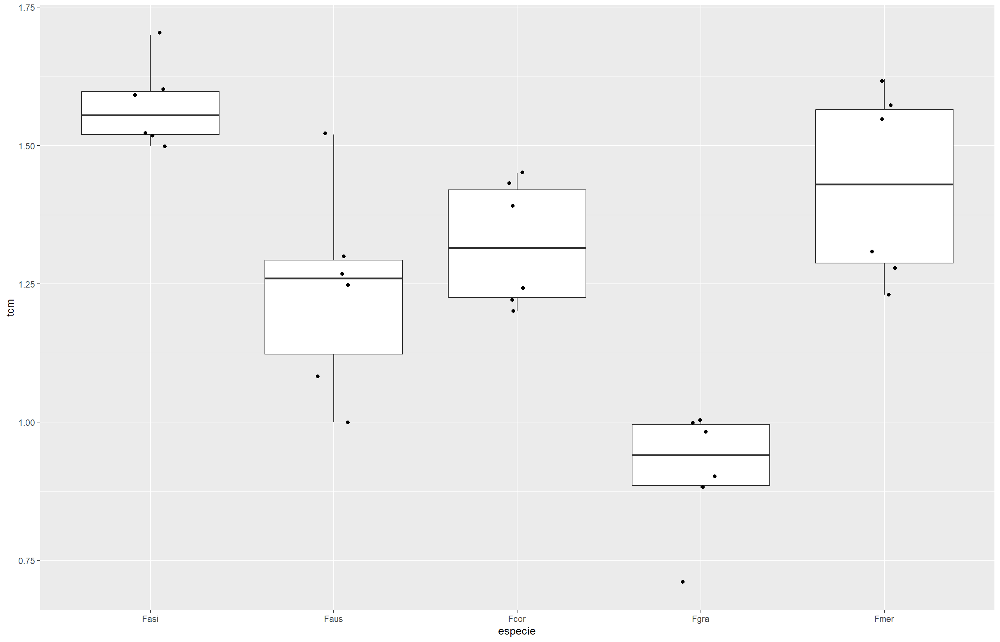
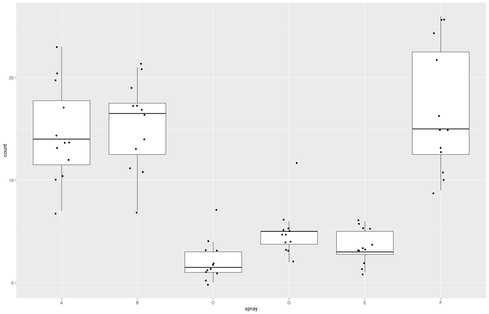

library(gsheet)
dat_mg <- gsheet2tbl("https://docs.google.com/spreadsheets/d/1bq2N19DcZdtax2fQW9OHSGMR0X2__Z9T/edit?gid=983033137#gid=983033137")Testes Estatísticos: Comparando Grupos no R
Nesta aula, vamos aprender a aplicar os principais testes estatísticos usados para comparar grupos. Também vamos entender os pressupostos de normalidade e homogeneidade de variância, e o que fazer quando esses pressupostos não são atendidos. A análise é acompanhada de visualizações gráficas com o ggplot2.
Teste t para comparação de dois grupos independentes
Serão utilizados os dados disponibilizados online na planilha dat_mg, que comparam o comprimento de lesões foliares sob dois tratamentos: controle e Mg2 (aplicação de magnésio), por meio da função t.test, nativa do R.
Antes de realizar testes, é sempre recomendado explorar visualmente os dados:
library(ggplot2)
ggplot(dat_mg, aes(trat, comp)) +
geom_jitter(width = 0.1)O gráfico de dispersão permite visualizar que há uma diferença aparente entre os grupos, mas essa diferença precisa ser confirmada por meio de um teste estatístico. Para isso, os dados serão reorganizados no formato largo (wide), estrutura exigida por algumas funções do R, como o t.test(), quando os grupos estão em colunas separadas.
library(dplyr)
library(tidyverse)
dat_mg2 <- dat_mg |>
pivot_wider(names_from = trat, values_from= comp)|>
dplyr::select(-rep)O teste t é utilizado para comparar as médias de dois grupos. No exemplo abaixo, comparamos control e Mg2.
attach(dat_mg2)
t.test(Mg2, control)
Welch Two Sample t-test
data: Mg2 and control
t = -8.1549, df = 17.354, p-value = 2.423e-07
alternative hypothesis: true difference in means is not equal to 0
95 percent confidence interval:
-6.490393 -3.825607
sample estimates:
mean of x mean of y
10.520 15.678 t.test(control, Mg2)
Welch Two Sample t-test
data: control and Mg2
t = 8.1549, df = 17.354, p-value = 2.423e-07
alternative hypothesis: true difference in means is not equal to 0
95 percent confidence interval:
3.825607 6.490393
sample estimates:
mean of x mean of y
15.678 10.520 t.resultes <-t.test(control, Mg2, var.equal = FALSE)Para tornar a interpretação do teste t mais acessível e descritiva, podemos utilizar o pacote report, que gera um resumo textual claro dos principais achados do teste. Isso facilita a comunicação dos resultados, especialmente em relatórios e apresentações.
library(report)
t.resultes <-t.test(control, Mg2, var.equal = FALSE)
report(t.resultes)Effect sizes were labelled following Cohen's (1988) recommendations.
The Welch Two Sample t-test testing the difference between control and Mg2
(mean of x = 15.68, mean of y = 10.52) suggests that the effect is positive,
statistically significant, and large (difference = 5.16, 95% CI [3.83, 6.49],
t(17.35) = 8.15, p < .001; Cohen's d = 3.65, 95% CI [2.14, 5.12])Verificação das premissas
Para garantir a confiabilidade do teste realizado, é importante verificar se os dados atendem a certas premissas, como a normalidade dos grupos e a homogeneidade das variâncias entre eles.
Teste de normalidade
- Histograma
O histograma permite avaliar visualmente se a normalidade é atendida nos dados. Os histogramas mostram a forma da distribuição dos dados. Buscamos uma forma aproximadamente simétrica e em sino (distribuição normal).
hist(dat_mg2$control)hist(dat_mg2$Mg2)- Shapiro-Wilk
Esse é o teste formal mais usado para verificar se uma variável segue distribuição normal. Nesse caso, será aplicada a função shapiro.test (nativa do R):
shapiro.test(dat_mg2$control)
Shapiro-Wilk normality test
data: dat_mg2$control
W = 0.93886, p-value = 0.5404shapiro.test(dat_mg2$Mg2)
Shapiro-Wilk normality test
data: dat_mg2$Mg2
W = 0.97269, p-value = 0.9146O teste de Shapiro-Wilk retorna um valor-p. Se p > 0,05, não há evidência contra a normalidade. Ou seja, os dados são considerados normalmente distribuídos.
Teste de homogeneidade
Para avaliar a homogeneidade entre as variantes será utilizada a função var.test :
var.test(dat_mg2$control, dat_mg2$Mg2)
F test to compare two variances
data: dat_mg2$control and dat_mg2$Mg2
F = 0.67654, num df = 9, denom df = 9, p-value = 0.5698
alternative hypothesis: true ratio of variances is not equal to 1
95 percent confidence interval:
0.1680428 2.7237436
sample estimates:
ratio of variances
0.6765394 O teste de homogeneidade de variâncias também não rejeita a hipótese nula, pois o valor de p > 0,05, indicando que os tratamentos apresentam variâncias semelhantes.
Dessa forma, considerando a normalidade e a homogeneidade de variâncias, é possível confiar nos resultados obtidos pelo teste t.
Teste t com rstatix e visualização com ggpubr
Além do t.test() nativo do R, podemos usar funções do pacote rstatix, que facilitam a realização de testes estatísticos com sintaxe mais intuitiva e integração com visualizações do ggpubr.
library(rstatix)
test <- t_test(comp ~ trat, data = dat_mg)Aqui estamos comparando a variável comp entre os níveis da variável trat. O objeto test guarda os resultados, incluindo o valor de p e o intervalo de confiança.
Para facilitar a interpretação visual do teste estatístico, podemos utilizar um gráfico do tipo boxplot com o pacote ggpubr.
library(ggpubr)
p <- ggboxplot(
dat_mg, x = "trat", y="comp",
color = "trat", palette = "jco")Teste t pareado
Utilizado quando os dois grupos estão relacionados, como medidas feitas antes e depois de um tratamento nos mesmos indivíduos.
Aqui usaremos esse teste ao comparar a acurácia de diagnósticos com (Aided1) e sem (Unaided) suporte, onde a mesma pessoa foi avaliada nas duas condições com o objetivo de verificar se houve diferença significativa entre os dois momentos.
escala <- gsheet2tbl("https://docs.google.com/spreadsheets/d/1bq2N19DcZdtax2fQW9OHSGMR0X2__Z9T/edit?gid=1729131173#gid=1729131173")
view(escala)O boxplot será gerado para a visualiação rápida dos dados
escala |>
ggplot(aes(assessment, acuracia))+
geom_boxplot()Seguidamente, foram criados dois vetores separados, um para cada grupo que será comparado. No exemplo a seguir, vamos comparar a acurácia das avaliações feitas sem auxílio (Unaided) e com auxílio (Aided1). Para isso, extraímos os valores de cada grupo da seguinte forma:
unaided <- escala |>
filter(assessment == "Unaided") |>
select(acuracia) |>
pull ()
aiaded <- escala |>
filter(assessment == "Aided1") |>
select(acuracia) |>
pull ()Verificação das premissas
Antes de aplicar o teste t, devemos checar duas premissas:
Normalidade dos dados
Utilizamos o teste de Shapiro-Wilk para verificar se os dados de ambos os grupos seguem uma distribuição normal:
shapiro.test(unaided)
Shapiro-Wilk normality test
data: unaided
W = 0.7748, p-value = 0.007155shapiro.test(aiaded)
Shapiro-Wilk normality test
data: aiaded
W = 0.92852, p-value = 0.4335A variável unaided possui uma distribuição não normal, já que o p < 0,05. Já a variável aiaded possui uma distribuição normal, com p > 0,05.
Homogeneidade das variâncias
Embora o teste t pareado seja menos sensível a isso, ainda podemos usar o var.test para avaliar:
var.test(unaided, aiaded)
F test to compare two variances
data: unaided and aiaded
F = 20.978, num df = 9, denom df = 9, p-value = 0.000106
alternative hypothesis: true ratio of variances is not equal to 1
95 percent confidence interval:
5.210754 84.459185
sample estimates:
ratio of variances
20.97847 Os resultados do teste apontam que os grupos têm variâncias significativamente diferentes, já que o valor de p < 0,05.
t.test(unaided, aiaded, paired = TRUE,
var.equal = FALSE)
Paired t-test
data: unaided and aiaded
t = -4.4214, df = 9, p-value = 0.001668
alternative hypothesis: true mean difference is not equal to 0
95 percent confidence interval:
-0.3552353 -0.1147647
sample estimates:
mean difference
-0.235 Como as premissas do teste t foram violadas, a melhor alternativa é usar o teste de Wilcoxon pareado, que é não paramétrico e não exige normalidade nem igualdade de variância.
Teste de Wilcoxon
wilcox.test(unaided, aiaded, paired = FALSE)
Wilcoxon rank sum test with continuity correction
data: unaided and aiaded
W = 0, p-value = 0.0001756
alternative hypothesis: true location shift is not equal to 0Como os grupos apresentaram valores repetidos, o R emitiu um aviso informando que o p-valor exato não pôde ser calculado devido a empates. Ainda assim, o resultado do teste foi computado com correção de continuidade, retornando um p-valor de 0.00018, indicando diferença estatística significativa entre os grupos avaliados.
Análise de variância (ANOVA)
Esse teste estatístico avalia se existem diferenças significativas entre as médias de três ou mais grupos. Para realizar esse teste utilizaremos o banco de dados micelial, importado diretamente do Google Sheets, que contém informações sobre o crescimento micelial (em mm/dia) de diferentes espécies de fungos.
micelial <- gsheet2tbl("https://docs.google.com/spreadsheets/d/1bq2N19DcZdtax2fQW9OHSGMR0X2__Z9T/edit?gid=959387827#gid=959387827")
view(micelial)Para verificar a distribuição dos valores de crescimento por espécie, utilizamos um boxplot com pontos de dispersão:
micelial |>
ggplot(aes(especie, tcm))+
geom_boxplot(outlier.colour = NA)+
geom_jitter(width = 0.1)Aplicaremos a anova:
anova1 <- aov(tcm ~especie, data = micelial) # Ajusta um modelo de ANOVA (análise de variância) clássico
anova2 <- lm(tcm ~especie, data = micelial) # Ajusta um modelo linear (lm = linear model), equivalente à ANOVA
anova(anova1)Analysis of Variance Table
Response: tcm
Df Sum Sq Mean Sq F value Pr(>F)
especie 4 1.46958 0.36739 19.629 2.028e-07 ***
Residuals 25 0.46792 0.01872
---
Signif. codes: 0 '***' 0.001 '**' 0.01 '*' 0.05 '.' 0.1 ' ' 1anova(anova2)Analysis of Variance Table
Response: tcm
Df Sum Sq Mean Sq F value Pr(>F)
especie 4 1.46958 0.36739 19.629 2.028e-07 ***
Residuals 25 0.46792 0.01872
---
Signif. codes: 0 '***' 0.001 '**' 0.01 '*' 0.05 '.' 0.1 ' ' 1O valor de p = 2.028e-07 (muito menor que 0,05) indica que há diferença significativa entre as médias das espécies.
- Como a ANOVA indica que existem diferenças significativas entre os grupos, o próximo passo fundamental é verificar se os dados atendem às premissas necessárias para a validade desse teste, ou seja, a normalidade dos resíduos e a homogeneidade das variâncias. Vamos então realizar essas checagens para garantir a confiabilidade dos resultados.
Checagem das premissas da ANOVA
- Histograma:
hist(residuals(anova1))- Normalidade de variâncias:
shapiro.test(residuals(anova1))
Shapiro-Wilk normality test
data: residuals(anova1)
W = 0.9821, p-value = 0.8782- Homogeneidade de variâncias:
bartlett.test(tcm ~ especie, data = micelial) # Mais sensível a desvios da normalidade
Bartlett test of homogeneity of variances
data: tcm by especie
Bartlett's K-squared = 4.4367, df = 4, p-value = 0.3501install.packages("rstatix") # se ainda não tiver instalado
library(rstatix)
levene_test(tcm ~ especie, data = micelial) # Mais robusto à não normalidade)# A tibble: 1 × 4
df1 df2 statistic p
<int> <int> <dbl> <dbl>
1 4 25 1.76 0.169Diante dos resultados obtidos, podemos concluir que os dados apresentam normalidade dos resíduos (p > 0,05) e homogeneidade de variâncias (p > 0,05) o que valida o uso da ANOVA paramétrica para comparar as médias de crescimento micelial entre as diferentes espécies.
Apesar da ANOVA indicar que há diferença significativa entre os grupos, ela não informa entre quais grupos essas diferenças ocorrem.
Para isso, realizaremos agora as comparações múltiplas usando a função emmeans() (médias ajustadas) e cld() para visualizar quais grupos são significativamente diferentes entre si.
Comparações múltiplas (post-hoc)
Primeiro, estimamos as médias ajustadas (ou médias marginais) para cada grupo da variável especie.
Com essas médias, conseguimos visualizar o comportamento geral de cada grupo e, em seguida, aplicar testes de comparações múltiplas para identificar quais grupos diferem estatisticamente entre si.
library(emmeans)
m <- emmeans(anova2, ~especie)
m especie emmean SE df lower.CL upper.CL
Fasi 1.572 0.0559 25 1.457 1.69
Faus 1.237 0.0559 25 1.122 1.35
Fcor 1.322 0.0559 25 1.207 1.44
Fgra 0.912 0.0559 25 0.797 1.03
Fmer 1.427 0.0559 25 1.312 1.54
Confidence level used: 0.95 Agora que temos as médias ajustadas, podemos realizar as comparações entre os grupos para verificar quais espécies apresentam diferenças estatísticas significativas.
Vamos utilizar a função cld() do pacote multcompView, juntamente com as funções pairs() e cld() do pacote emmeans, para realizar e visualizar as comparações múltiplas entre os grupos.
micelial <- gsheet2tbl("https://docs.google.com/spreadsheets/d/1bq2N19DcZdtax2fQW9OHSGMR0X2__Z9T/edit?gid=959387827#gid=959387827")
micelial |>
ggplot(aes(especie, tcm))+
geom_boxplot(outlier.colour = NA)+
geom_jitter(width = 0.1)
anova1 <- aov(tcm ~ especie, data = micelial)
anova1 Call:
aov(formula = tcm ~ especie, data = micelial)
Terms:
especie Residuals
Sum of Squares 1.4695800 0.4679167
Deg. of Freedom 4 25
Residual standard error: 0.1368089
Estimated effects may be unbalanced anova(anova1)Analysis of Variance Table
Response: tcm
Df Sum Sq Mean Sq F value Pr(>F)
especie 4 1.46958 0.36739 19.629 2.028e-07 ***
Residuals 25 0.46792 0.01872
---
Signif. codes: 0 '***' 0.001 '**' 0.01 '*' 0.05 '.' 0.1 ' ' 1 anova2 <- lm(tcm ~ especie, data = micelial)
anova(anova2)Analysis of Variance Table
Response: tcm
Df Sum Sq Mean Sq F value Pr(>F)
especie 4 1.46958 0.36739 19.629 2.028e-07 ***
Residuals 25 0.46792 0.01872
---
Signif. codes: 0 '***' 0.001 '**' 0.01 '*' 0.05 '.' 0.1 ' ' 1 residuals(anova1) 1 2 3 4 5 6
-0.07166667 0.01833333 -0.05166667 -0.05166667 0.02833333 0.12833333
7 8 9 10 11 12
0.28333333 0.01333333 0.03333333 0.06333333 -0.15666667 -0.23666667
13 14 15 16 17 18
-0.10166667 -0.08166667 -0.12166667 0.06833333 0.10833333 0.12833333
19 20 21 22 23 24
-0.03166667 0.06833333 -0.20166667 0.08833333 -0.01166667 0.08833333
25 26 27 28 29 30
0.12333333 0.19333333 0.14333333 -0.11666667 -0.14666667 -0.19666667 hist(residuals(anova1))
shapiro.test(residuals(anova1))
Shapiro-Wilk normality test
data: residuals(anova1)
W = 0.9821, p-value = 0.8782 bartlett.test(tcm ~ especie, data = micelial)
Bartlett test of homogeneity of variances
data: tcm by especie
Bartlett's K-squared = 4.4367, df = 4, p-value = 0.3501 levene_test(tcm ~especie, data = micelial)# A tibble: 1 × 4
df1 df2 statistic p
<int> <int> <dbl> <dbl>
1 4 25 1.76 0.169 library(emmeans)
m <- emmeans(anova2, ~ especie)
m especie emmean SE df lower.CL upper.CL
Fasi 1.572 0.0559 25 1.457 1.69
Faus 1.237 0.0559 25 1.122 1.35
Fcor 1.322 0.0559 25 1.207 1.44
Fgra 0.912 0.0559 25 0.797 1.03
Fmer 1.427 0.0559 25 1.312 1.54
Confidence level used: 0.95 library(multcomp)
library(multcompView)
cld(m) especie emmean SE df lower.CL upper.CL .group
Fgra 0.912 0.0559 25 0.797 1.03 1
Faus 1.237 0.0559 25 1.122 1.35 2
Fcor 1.322 0.0559 25 1.207 1.44 2
Fmer 1.427 0.0559 25 1.312 1.54 23
Fasi 1.572 0.0559 25 1.457 1.69 3
Confidence level used: 0.95
P value adjustment: tukey method for comparing a family of 5 estimates
significance level used: alpha = 0.05
NOTE: If two or more means share the same grouping symbol,
then we cannot show them to be different.
But we also did not show them to be the same. pwpm(m) Fasi Faus Fcor Fgra Fmer
Fasi [1.572] 0.0023 0.0302 <.0001 0.3765
Faus 0.335 [1.237] 0.8169 0.0031 0.1469
Fcor 0.250 -0.085 [1.322] 0.0002 0.6761
Fgra 0.660 0.325 0.410 [0.912] <.0001
Fmer 0.145 -0.190 -0.105 -0.515 [1.427]
Row and column labels: especie
Upper triangle: P values adjust = "tukey"
Diagonal: [Estimates] (emmean)
Lower triangle: Comparisons (estimate) earlier vs. later pairs(m) contrast estimate SE df t.ratio p.value
Fasi - Faus 0.335 0.079 25 4.241 0.0023
Fasi - Fcor 0.250 0.079 25 3.165 0.0302
Fasi - Fgra 0.660 0.079 25 8.356 <.0001
Fasi - Fmer 0.145 0.079 25 1.836 0.3765
Faus - Fcor -0.085 0.079 25 -1.076 0.8169
Faus - Fgra 0.325 0.079 25 4.115 0.0031
Faus - Fmer -0.190 0.079 25 -2.405 0.1469
Fcor - Fgra 0.410 0.079 25 5.191 0.0002
Fcor - Fmer -0.105 0.079 25 -1.329 0.6761
Fgra - Fmer -0.515 0.079 25 -6.520 <.0001
P value adjustment: tukey method for comparing a family of 5 estimates `
A partir dos resultados, os grupos foram agrupados em uma tabela para facilitar a visualização das espécies que apresentam diferenças estatisticamente significativas.
| Espécie | Média Ajustada (emmean) |
Grupo (letra) |
|---|---|---|
| Fgra | 0.912 | A |
| Faus | 1.237 | B |
| Fcor | 1.322 | B |
| Fmer | 1.427 | BC |
| Fasi | 1.572 | C |
Com um nível de significância de 5%, interpretamos que a espécie Fgra apresenta a menor taxa de crescimento em comparação com as demais. As espécies Faus, Fcor e Fmer possuem taxas de crescimento estatisticamente semelhantes entre si. Além disso, Fmer e Fasi também não diferem estatisticamente e apresentam as maiores taxas de crescimento.
Testes alternativos à ANOVA: Transformações e métodos não paramétricos
Para exemplificar estratégias analíticas em situações em que as premissas da ANOVA não são atendidas, utilizaremos um conjunto de dados chamado InsectSprays, disponível no próprio R. Esse conjunto simula a contagem de insetos após aplicação de diferentes tipos de pulverizações (sprays).
insetos <- InsectSpraysPara visualização dos dados, será construído um gráfico boxplots com pontos.
insetos |>
ggplot(aes(spray, count))+
geom_boxplot(outlier.color = NA)+
geom_jitter(width = 0.1)
O boxplot mostra uma comparação entre os grupos (tipos de spray). No entanto, antes de aplicar um teste paramétrico, precisamos verificar se os dados seguem distribuição normal e possuem homogeneidade de variâncias. Ajustaremos um modelo linear com os dados e esse modelo será usado para verificar se atendem às premissas da ANOVA.
- Histograma:
m2 <- lm(count ~ spray, data = insetos)
hist(residuals(m2))- Normalidade de variâncias:
shapiro.test(residuals(m2))
Shapiro-Wilk normality test
data: residuals(m2)
W = 0.96006, p-value = 0.02226- Homogeneidade de variâncias:
bartlett.test(count ~ spray, data = insetos)
Bartlett test of homogeneity of variances
data: count by spray
Bartlett's K-squared = 25.96, df = 5, p-value = 9.085e-05- Verificação visual da normalidade dos resíduos com gráfico QQ-plot:
qqnorm(residuals(m2)) # Plota os resíduos esperados vs. observados
qqline(residuals(m2)) # Adiciona a linha de referência da normalidadeOs resultados indicam que os resíduos não seguem uma distribuição normal (p < 0,05) e que as variâncias entre os grupos não são homogêneas (p < 0,05), configurando uma violação das premissas da ANOVA. Essa falta de normalidade e homogeneidade também é evidenciada visualmente pelo gráfico QQ-plot e pelo histograma dos resíduos, que mostram desvios significativos da distribuição normal.
Diante disso, duas abordagens alternativas podem ser adotadas:
Transformar a variável resposta
Uma forma de contornar a violação das premissas é transformar a variável resposta (count) em ranks, substituindo os valores originais pela sua posição ordenada. Essa abordagem diminui a influência das distribuições não normais nos resultados da análise.
m3 <- lm(rank(count) ~spray, data = insetos)Agora vamos verificar se essa abordagem foi eficaz
- Histograma:
hist(residuals(m3))- Normalidade de variâncias:
shapiro.test(residuals(m3))
Shapiro-Wilk normality test
data: residuals(m3)
W = 0.98287, p-value = 0.4342- Homogeneidade de variâncias:
bartlett.test(residuals(m3) ~ spray, data = insetos)
Bartlett test of homogeneity of variances
data: residuals(m3) by spray
Bartlett's K-squared = 1.2924, df = 5, p-value = 0.9357- Verificação visual da normalidade dos resíduos com gráfico QQ-plot:
qqnorm(residuals(m3))
qqline(residuals(m3))Após a transformação os resultados indicam que os resíduos seguem uma distribuição normal e homogênea (p > 0,05) ), atendendo às premissas da ANOVA. Essa adequação é reforçada pelo histograma dos resíduos, que apresenta forma simétrica, e do gráfico QQ-plot, que mostra os pontos alinhados à linha teórica, sugerindo aderência à normalidade. Assim, os pressupostos estatísticos estão satisfeitos, e a ANOVA pode ser aplicada com segurança para testar diferenças entre os grupos.
anova(m3)Analysis of Variance Table
Response: rank(count)
Df Sum Sq Mean Sq F value Pr(>F)
spray 5 23859.3 4771.9 44.266 < 2.2e-16 ***
Residuals 66 7114.7 107.8
---
Signif. codes: 0 '***' 0.001 '**' 0.01 '*' 0.05 '.' 0.1 ' ' 1A ANOVA com dados transformados por postos mostrou diferença significativa entre os grupos (F = 44.266, p < 0,001), indicando que pelo menos um tratamento difere dos outros.
Agora, para identificar quais grupos apresentam diferenças significativas após a ANOVA, utilizamos as comparações múltiplas com o pacote emmeans.
m33 <- emmeans(m3, ~ spray, type = "response")
cld(m33) spray response SE df lower.CL upper.CL .group
C 11.5 3 66 5.47 17.4 1
E 19.3 3 66 13.35 25.3 12
D 25.6 3 66 19.60 31.6 2
A 52.2 3 66 46.18 58.2 3
B 54.8 3 66 48.85 60.8 3
F 55.6 3 66 49.64 61.6 3
Unknown transformation "rank": no transformation done
Confidence level used: 0.95
Note: contrasts are still on the rank scale. Consider using
regrid() if you want contrasts of back-transformed estimates.
P value adjustment: tukey method for comparing a family of 6 estimates
significance level used: alpha = 0.05
NOTE: If two or more means share the same grouping symbol,
then we cannot show them to be different.
But we also did not show them to be the same. plot(m33)Os resultados mostram que os grupos se dividem em três conjuntos estatisticamente diferentes: o grupo C apresenta a menor média de resposta (11,5), seguido pelos grupos E e D com médias intermediárias (19,3 e 25,6), e os grupos A, B e F com as maiores médias (52,2; 54,8 e 55,6). Isso indica que A, B e F não diferem entre si, mas são significativamente diferentes dos demais grupos, enquanto D e E formam um grupo intermediário distinto de C e dos grupos com maiores respostas.
Testes não paramétricos
Quando os dados continuam não atendendo às premissas, mesmo com transformações, utilizamos um teste não paramétrico. Nesse caso, aplicamos o teste de Kruskal-Wallis, uma alternativa à ANOVA para dados sem distribuição normal e/ou com variâncias heterogêneas.
kruskal.test(count ~ spray, data = insetos)
Kruskal-Wallis rank sum test
data: count by spray
Kruskal-Wallis chi-squared = 54.691, df = 5, p-value = 1.511e-10Há diferença significativa entre pelo menos dois grupos de spray em relação ao número de insetos (count), com um valor de p < 0,05.
Outras formas de aplicar o teste com pacotes adicionais
Com o pacote rstatix (para análises modernas e integração com ggplot2):
library(rstatix)
kruskal_test(insetos, count ~ spray)# A tibble: 1 × 6
.y. n statistic df p method
* <chr> <int> <dbl> <int> <dbl> <chr>
1 count 72 54.7 5 1.51e-10 Kruskal-Wallis